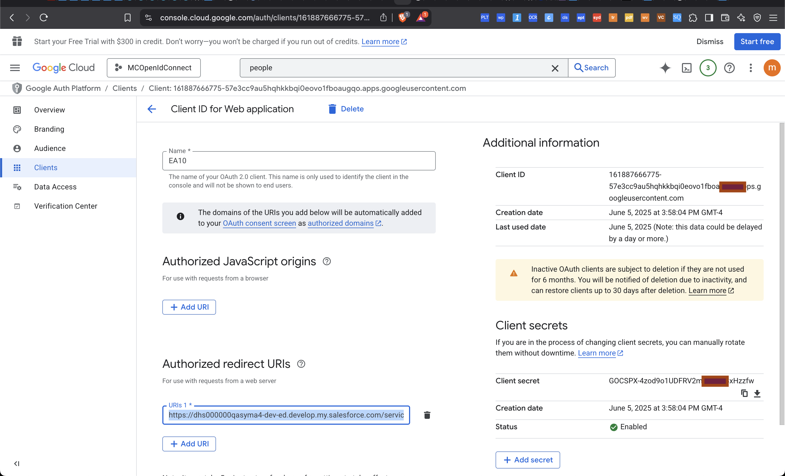
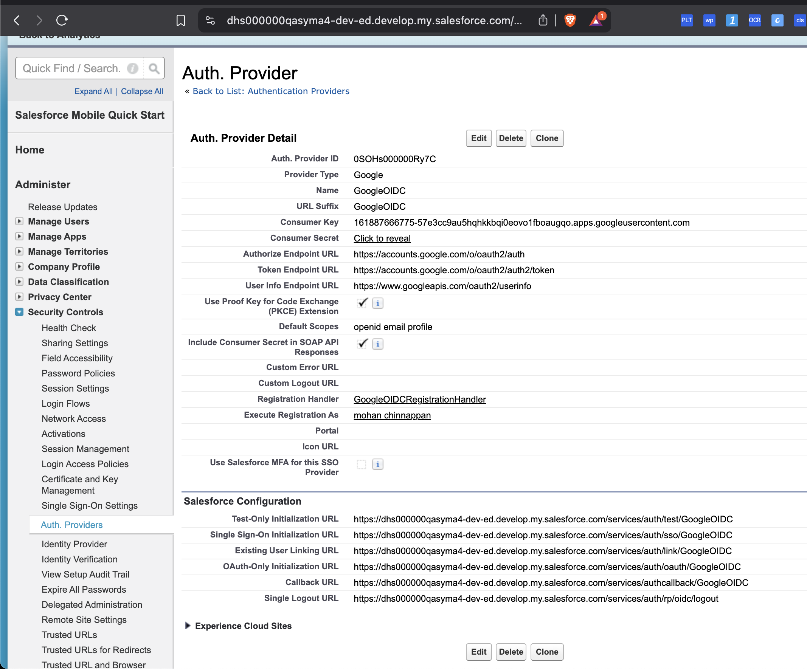
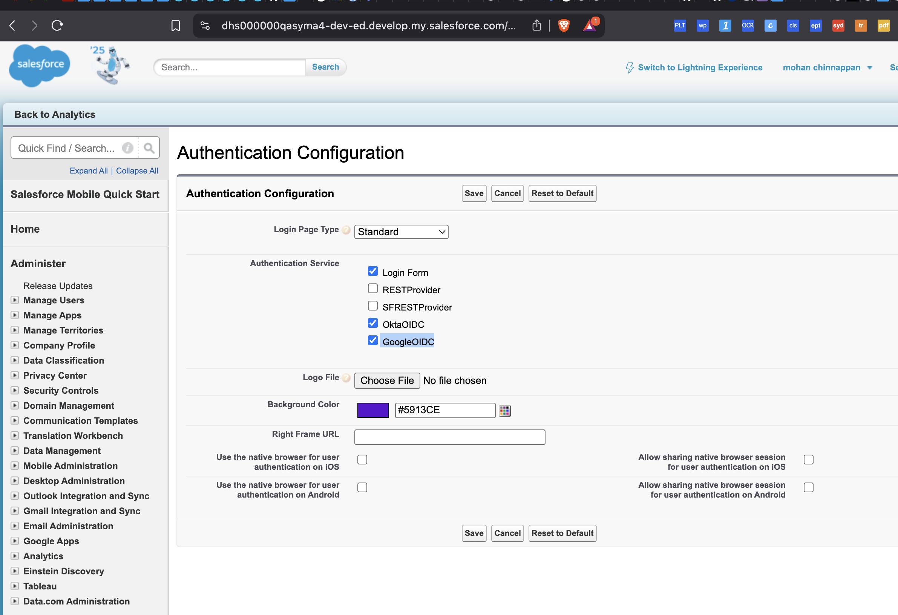
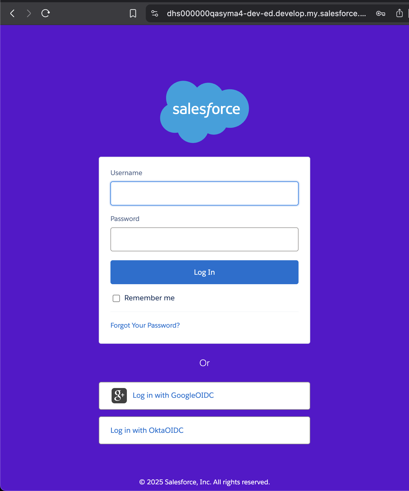

Overview
This guide explains how to configure Google as an OpenID Connect Identity Provider (IdP)
to allow Salesforce users to log in using their Google accounts.
Step 1: Create a Google Cloud Project and OAuth Client
- Go to Google Cloud Console.
- Create a new project or select an existing one.
- Enable the “OAuth 2.0 Client ID” under APIs & Services > Credentials.
- Click Create Credentials > OAuth client ID.
- Set:
- Application Type: Web application
- Authorized redirect URIs: Paste Salesforce’s Callback URL (you’ll get this from Salesforce Auth Provider page after initial save)
- Click Create.

Note: After creation, save the Client ID and Client Secret. You will need these in Salesforce.
Step 2: Configure Auth. Provider in Salesforce
- Go to Setup > Auth. Providers.
- Click New.
- Configure the following:
- Provider Type: OpenID Connect
- Name: GoogleOIDC
- Consumer Key: (Paste your Google Client ID)
- Consumer Secret: (Paste your Google Client Secret)
- Authorize Endpoint URL:
https://accounts.google.com/o/oauth2/v2/auth
- Token Endpoint URL:
https://accounts.google.com/o/oauth2/auth2/token
- User Info Endpoint URL:
https://www.googleapis.com/oauth2/userinfo
- Issuer:
https://accounts.google.com
- Default Scopes:
openid email profile
- Registration Handler: Custom Apex class (see below)
- Execute Registration As: Choose an admin user
- Click Save.

- Copy the generated Callback URL and add it to Google’s OAuth settings.
Step 3: Create a Registration Handler Apex Class
To prevent automatic user creation and allow only existing users to log in:
global class GoogleOIDCRegistrationHandler implements Auth.RegistrationHandler {
global User createUser(Id portalId, Auth.UserData data) {
throw new Auth.AuthException('User creation is not allowed.');
}
global void updateUser(Id userId, Id portalId, Auth.UserData data) {
User u = [SELECT Id, Email FROM User WHERE Id = :userId];
u.Email = data.email;
update u;
}
}
Step 4: Add Login Option to My Domain
- Go to Setup > My Domain.
- Edit the Login Page settings.
- Add the new GoogleOIDC Auth Provider as a login option.
- Save and deploy your domain if not already done.

Step 5: Test the Login
- Go to your My Domain login page.

- Click the Google login button.
- You should be redirected to the Google Sign-In screen, then back to Salesforce if the user exists.
Troubleshooting
- NO_ACCESS: Unable to find a user – means user does not exist in Salesforce and creation is not allowed.
- Ensure that your callback URL in Google matches exactly what Salesforce provided.
- Check for scope and endpoint typos.
Demo and docs
View more docs and Watch the demo video for a step-by-step walkthrough.
References